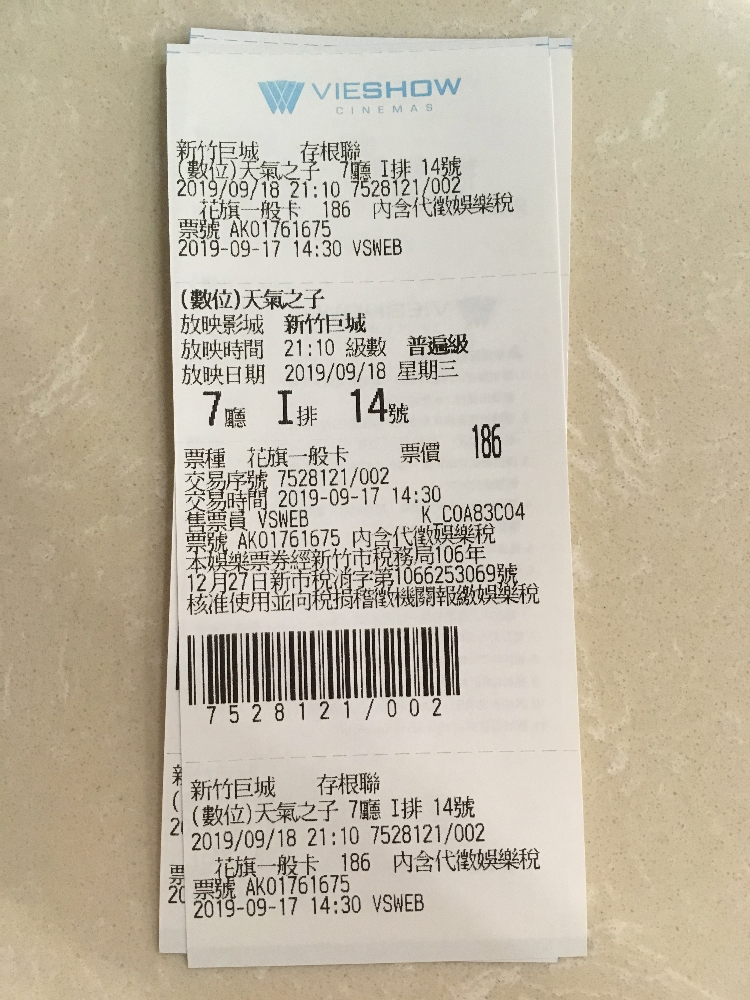
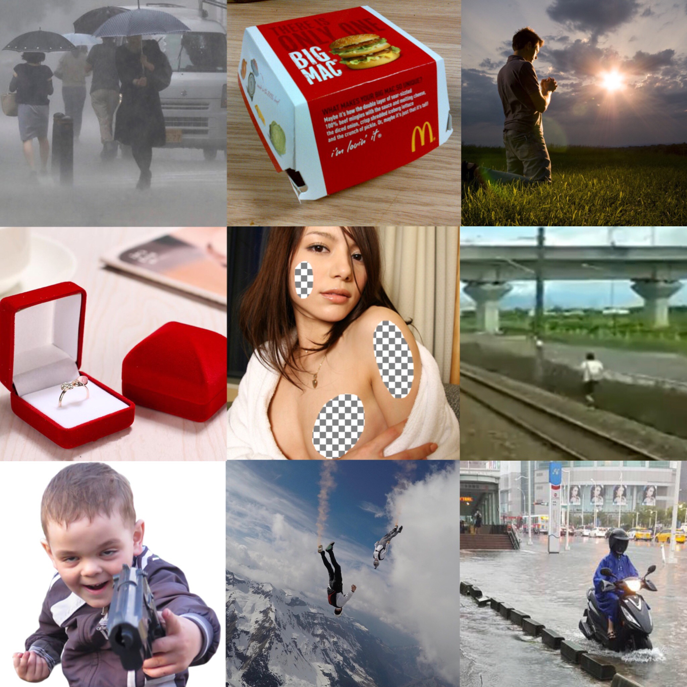

【心得】天氣之子
文章目錄
先上電影票根

在之前看完君名，太過於理性思考的結果，讓我知道了該怎麼看新海誠作品的正確方式：
不要太過於去思考原理。
他不是型月，真的不需要每個東西都去抓BUG。
用這樣的心情刷了一次，真的挺開心的。
先說說本作品適合怎樣的人：
- 對神道教有了解的人
- 對都市傳說有了解的人
- 對於東京有一定程度了解的人
- 喜歡誠哥
雖然兩個月前就買了小說，但最後決定還是用一個完全沒有被雷過，連預告都沒看過的心情下去看。
下面有劇情討論，還沒看過的麻煩右轉。
|
|
|
|
防雷線
|
|
|
|
「あの光の中に、行ってみたかった」
高１の夏。離島から家出し、東京にやってきた帆高。
しかし生活はすぐに困窮し、孤独な日々の果てにようやく見つけた仕事は、
怪しげなオカルト雑誌のライター業だった。
彼のこれからを示唆するかのように、連日降り続ける雨。
そんな中、雑踏ひしめく都会の片隅で、帆高は一人の少女に出会う。
ある事情を抱え、弟とふたりで明るくたくましく暮らすその少女・陽菜。
彼女には、不思議な能力があった。
電影一開始就是陽菜穿過了代代木大樓樓頂的鳥居。鳥居被視為結界，人神分隔之處，這段描寫做得非常棒。
為了去尋找那道光，搭乘著船さるびあ丸，帆高跑去了東京。其實電影沒有寫很清楚，具體而言家裡到底發生什麼才讓他毅然決然上京，不過可以很夢幻的解釋為，就是為了尋找那道光。
有交代是從神津島出發的，也就是在東京東南方諸島上。
劇情有一段是在Yahoo! 知恵袋上發問，這段真的蠻好笑的。
在船上被奇怪的大叔救，給了他名片就知道是重要人物了。然後在東京到處尋找工作，也到處碰壁，還被速食店的可愛到爆炸的女孩子給了一份大麥克。
基本上就是最現實的東京，如果說君名描寫的是光明的東京，天氣之子描寫的東京簡直就是黑暗面。
尤其是歌舞伎的風俗店描寫，過於寫實到有點令人反胃。
此外推薦去看這影片，雖然看到會笑一下（畢竟就是最貼近的現實），但其實這行業是非常黑暗到令人作嘔的。
最後果然是去名片的神奇大叔店。
有JD，整個大開心。
夏美的口吻超喜歡。
總之就是各種日常，尋找各種都市傳說，尤其是晴女的傳說，直到遇到了準備誤入歧途的陽菜。
這邊有撿到槍鏡頭，難怪大家一直說撿到槍XDDDD
總之就是得到可愛雙馬尾陽菜，然後就開始幫陽菜家計計畫。
靠著賣晴，收入開始逐漸穩定。
尤其是為了神宮煙火祈求的陽菜浴衣姿態。
好きー
在賺錢的途中，夏美等人也一直在尋找傳說，尤其是800年前的天氣繪。
畫著龍與鯨的繪，並且講述著祈雨之巫女的存在性、必要性，以及其結局。
自古以來龍就跟祈雨有關，比較好奇的是空飛ぶ鯨的存在代表什麼意義。
故事中不斷的出現龍與鯨，還有小魚。鯨魚代表的通常是吞食一切，代表消失、放棄等意涵。小魚則代表著媒介物，象徵人與天的溝通。
雨越下越大，越下越大。以警察上門為媒介，帆高帶著–女友–陽菜跟凪開始了跑路生活：並且天氣與陽菜的心情開始呼應，東京開始下起了暴雨。最後跑到了不看學生證的摩鐵，有著最後一夜意涵的房間裡充滿著快活的氣氛。
直到陽菜脫了衣服，顯示出自己時日不多了，劇情開始轉折。
作為祭品消失於人間，這就是祈雨巫女的下場。
隔天早上被查水表的帆高就這樣被帶回警局，然而女友還是最重要的，於是掙脫了警察，就為了把陽菜帶回來。
有了活祭品的東京，是個大晴天，不過我們的主角才不這麼管。東京是什麼鬼？對帆高而言，東京就是一個會拉女生去風俗店，充斥著各種不合理的地方的地方，雖然提供了緣分，但並沒什麼感情。
對他而言，陽菜才是一切。
總之在各種馬拉松跟飆車後，最後救了回來，Happy End。
最後來了個三年後，保護管束出來的帆高，以及戴著連帽外套的陽菜再次相遇，抱在一起。
結局只有一片白色，什麼都看不到，幹。
對我來說，天氣之子的觀賞體驗其實不錯，就是各種傳說跟神道教，主軸以祈雨巫女、都市傳說、環境問題，以及那種拯救真愛的事物為主。
「神明啊，拜託你了。」
「神様、どうか」
劇情中穿插著君名角色，不過我只看到了滝跟三葉，其他的真的沒注意到。
音樂部分，這次比較注意歌詞，其實真的貫穿了整部劇情，非常值得注意。
「大丈夫？」ってさぁ 君が気付いでさ 聞くから
「大丈夫だよ」って 僕は慌てていうけど
—〈大丈夫〉
誠哥是說，大丈夫根本就把整個劇情貫穿了。
此外在摩鐵唱的兩首歌也分別為
- 「恋するフォーチュンクッキー（AKB48）」
- 「恋（星野源）」
有夠大眾，不過我喜歡。
放個圖做結尾。

最後看個後報，可以去看小說了（逃）
參考網站
- https://tenkinoko.com
官網 - https://yumochiblog.com/tenkinoko-location
聖地巡禮 - https://tenkinoko.com/recipe.html
居然有陽菜食譜 - https://otenki-girl.jp
果然有註冊網域XDD - https://ja.wikipedia.org/wiki/鳥居
- https://note.mu/yuzusuzudear/n/nb822946420ab
- https://dailyportalz.jp/kiji/chief-priest-of-weather-shrine
- https://utaten.com/lyric/RADWIMPS/大丈夫+%28Movie+edit%29/
- https://dic.pixiv.net/a/天野陽菜